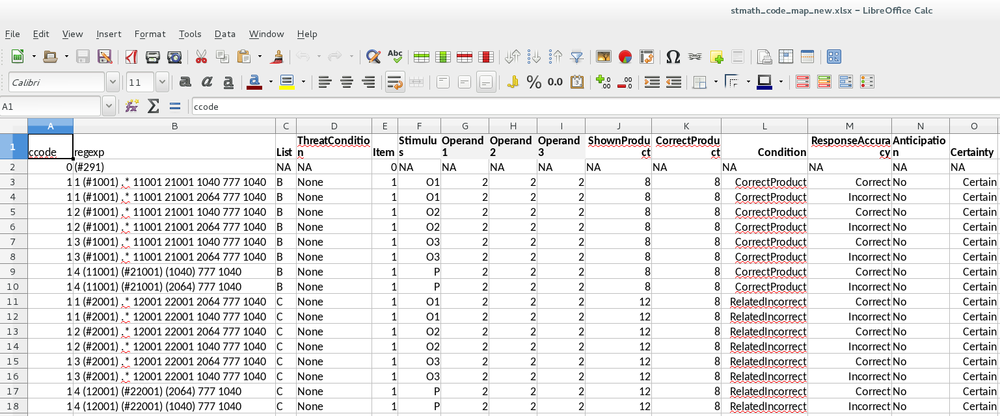

Code Maps¶
Can be either a ytbl (yaml markup format), an excel spreadsheet (xlsx), or a txt file
Figure out what code sequences you need to label of the data and use regular expressions to fill in the column ‘regexp’
Regexp is the only required column and is where you put in the regular expersion that matches the code pattern you are trying to match
You can name the other columns whatever you want and add as many or as few as you want
Examples¶
Simple, binned code map¶
If your coding scheme is fairly simple, you can use a ytbl format to tag the event codes in the table. This is only really recommended for binned analyses or analyses with few trials.
ytbl example
---
name: stmath
columns:
[condition, regexp, STthreat]
rows:
- [CorrectNoST, '(#11[0-9]{3})', NoST]
- [IncorrectNoST, '(#12[0-9]{3})', NoST]
- [RelatedNoST, '(#13[0-9]{3})', NoST]
- [CorrectST, '(#14[0-9]{3})', ST]
- [IncorrectST, '(#15[0-9]{3})', ST]
- [RelatedST, '(#16[0-9]{3})', ST]
Single trial code map with reaction times¶
Easiest way to build single trial code maps is in Excel. The extension must be .xlsx when it’s saved.
More complicated with many more variables added
Each stimulus has one line with one or more codes being captured.
Reaction times:
This example is complicated for getting reaction times, but if you don’t have an event code in between your stimulus and where the reaction time should be measured, you can just put the # on the button press code
Reaction times will only be recorded for the product stimuli (i.e., when the Stimulus column = P) in this example
Notice that each stimulus has two lines since there is an incorrect and a correct response
regexp is still the only required column.
If you use wild carding (*) be very carfeul that you actually get what you want
This is an item analysis code map, so each row in corresponds to a different regexp
If you put in ccode, it should match the condition codes you used on DIG (i.e., 0 for cals, 1 for experiment, etc.). You can use this option to be able to plot your cals over top your actual data, but you will want to be careful to drop them later during data analysis if you do this.
xlsx example
